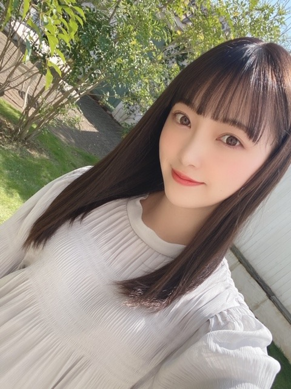
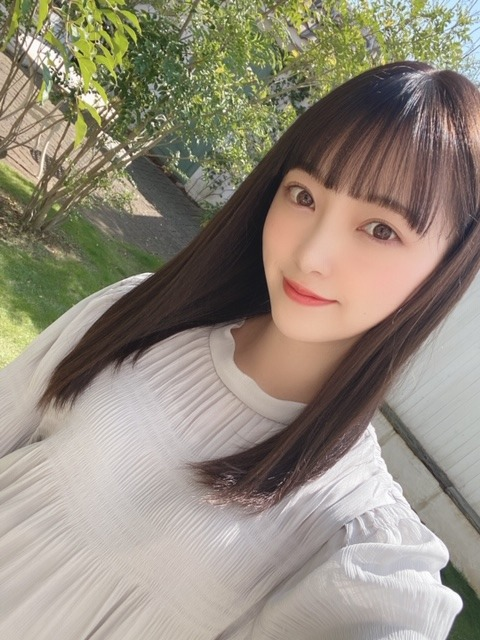

2020/0319Thuリンゴの余韻
こんにちは✿
昨日はレコメンに、みり愛と絢音が来てくれました
わ〜〜〜い
合間もずっとお喋りして
そのあとは2人がわたしのお家に泊まりにきて
それからまたお話ししてました(^-^)
楽しかったなぁ~
でも今ちょっと眠い...笑
今日も頑張りましょう!
レコメンパーソナリティもあと1回ですが
最後までよろしくお願いします
是非、聴いてください❁


室内だと暗め、陽に当たるとほんのり明るめ
になるよう染めていただいてから少し日にちが経ち
いい感じに色が抜けてきました
アッシュ系が好きなのでこれからも
くすみカラー色々挑戦したいです
このカラー名は Pale Mint Beige ❁ です
今日は天気がいいですね~ ❁
天気がいい日はお弁当を持って
牧場とか公園に行きたくなりますね


撮影スタジオが可愛かったので私服でパシャリ
この間1人で歩いていて4回つまずきました
久しぶりに履いた靴だからかな？とも思ったけど
スニーカーだしつまずいた場所段差もあったから
関係無さそう...
1人で転びそうになると恥ずかしいですよね
気をつけます
みなさんもお気をつけて...笑
では!
また更新しますね!
あ、皆さんおすすめの洋楽、
コメントにて教えてください!
こんにちは✿
昨日はレコメンに、みり愛と絢音が来てくれました
わ〜〜〜い
合間もずっとお喋りして
そのあとは2人がわたしのお家に泊まりにきて
それからまたお話ししてました(^-^)
楽しかったなぁ~
でも今ちょっと眠い...笑
今日も頑張りましょう!
レコメンパーソナリティもあと1回ですが
最後までよろしくお願いします
是非、聴いてください❁

室内だと暗め、陽に当たるとほんのり明るめ
になるよう染めていただいてから少し日にちが経ち
いい感じに色が抜けてきました
アッシュ系が好きなのでこれからも
くすみカラー色々挑戦したいです
このカラー名は Pale Mint Beige ❁ です
今日は天気がいいですね~ ❁
天気がいい日はお弁当を持って
牧場とか公園に行きたくなりますね
撮影スタジオが可愛かったので私服でパシャリ
この間1人で歩いていて4回つまずきました
久しぶりに履いた靴だからかな？とも思ったけど
スニーカーだしつまずいた場所段差もあったから
関係無さそう...
1人で転びそうになると恥ずかしいですよね
気をつけます
みなさんもお気をつけて...笑
では!
また更新しますね!
あ、皆さんおすすめの洋楽、
コメントにて教えてください!
2020/03/19 13:00


コメント(482)
家族のようなふれあいにほっこり。
洋楽はブラーのテンダー(tender)が好き。
ブリティッシュロックです。
よかったら聴いてみてー。
逆に堀ちゃんのオススメを教えてほしいです。。
未央奈がレコメン!レギュラーになってから毎週聴いてたから寂しいな…
また遊びに来てや！
マルーン5のサンデーモーニング、シュガー
ニーヨのソーシック
アッシャー、ブルーノ、レッチリ、エアロスミス、メタリカとかはカッコイイからよく聴く
とっても良きです
ＭＶ、ストーリーも良いけど
全員でのダンスシーンも可愛い
曲、歌声も良き
ＭＶのシーンで一番好きなのは
独りダンスが次々に重なるところです
レコメンで
未央奈さんの
弾ける笑い声を聴けなくなるのは
寂しいです
好きな洋楽を紹介させてください
Silvery Rain （Olivia Newton-John）
Oggi sono io （Alex Britti）
Moon Tattoo （SOFI TUKKER）
Vambora （Adriana Calcanhotto）
Nothing Can Come Between Us （Sade）
最新の曲ではないんですけど。。。
更新ありがとさんです。
髪の毛、かなりのびましたね。
洋楽はティラーしか聞かないですね。
では、又、更新宜しくお願いしやッス。
洋楽と言ったらやっぱりワンダイレクションでしょ！！！
Bruno MarsのThe Lazy Songって曲めっちゃ聞く！
一曲目はあなたに夢中！みたいな感じの歌詞だったと思う！あんま試合がわからないけど。笑
二曲目はずっとだらだらしていたいーって曲！
おすすめ！！
ラジオ聞けなかった～
今度が最後なんですね聴けたらいいな～
絢音ちゃんとみり愛ちゃんが泊まりに来たんですね。
写真かわいい～
写真の３枚目と４枚目と５枚目のジブリっぽくないですか？
未央奈ちゃんがつまずくとこかわいい～
でも気をつけてね。
洋楽のことわからない
すいません
レコメン聴いたよ、ラストあと1回だね、絶対聴くよ。
みり愛ちゃんと絢音ちゃん家に泊まったんだね、仲いいね。
今日のショットも可愛すぎです、ロングの髪型に髪色似合ってます。
堀ちゃん歩いていてつまずくんだ、
実は自分も何もないところでつまずくんだよね
調べたら左右の長さが若干違うのが原因らしいよ、整体行けば治るみたいです。
洋楽、最近聴かないからわからないな〜
ゴメンネ
では〜
綺麗やなぁー
『Love in A Box』と『A Starlit Sky』
Rachel Platten
『Fight Song 』と『Better Place』
Ringside
『Criminal』
Shelly Fraley
『Uh Oh, I'm Fallin'』
Carly Rae Jepsen
『Picture』
Coldplay
『Yellow』と『The Scientist』
Oasis
『Don't Look Back in Anger』
Green Day
『Wake Me Up When September Ends』『Good Riddance』
堀ちゃんの人生がより豊かになりますように
レコメン！面白かったですよー！！
旧プリン会とても楽しかったです！
お泊まりしてとても仲良しですね♪
レコメン卒業とても寂しいですが、
最終回も見届けたいと思ってます☆
新髪色とってもナチュラルですね！
自然体な写真とっても爽やかです✨
春にはスニーカーで心も弾みます！
春からも軽快に活躍して下さいね✌
レディー・ガガ新曲MV元気出るよ～☺
結局、新しい会の名前は謎のままでしたが(笑)。
来週でいよいよ卒業ですね。
必ず聴きますよ！
おすすめの洋楽は、クイーンかなぁ。
映画にもなったから、未央奈ちゃんが知ってる曲もあると思いますよ♪☆
自分は結構古いバンドが好きでよく聞いてるかな。
なかでもAerosmithさんが大好きでやっぱりMiss a ThingとCryin’は名曲だねー。
あとはJourneyさんのOPEN ARMSも大好きだなぁ。
この辺はカラオケでもほぼ100%歌ってるよ〜。
Journeyさんは最初のスティーヴ・ペリーさんから何人かボーカルが交代して今はフィリピン人のアーネル・ピネダさんって方が担当してるんだけど、この人の歌声がスティーブ・ペリーさんにめちゃくちゃ似ててしかも上手いんだよねぇ。
是非一回聴き比べして欲しい。
バンド以外だとPhillip PhillipsさんのGone,Gone,GoneとかSara Bareilles さんのBrave、Bryan AdamsさんのAll for Loveがおすすめかな。
にしても俺、未央奈と１つしか歳変わらないのに音楽の趣味が古いなww
やっぱり音楽って良いよね〜。
oasisは最高のRock'n'Roll Starです。
Red Hot Chilli Peppersが最近ブレイク中です。
CSSというガールズポップバンドの『Echo of Love』という曲が可愛らしくノリノリで気分を上げたい時におすすめです！
体調に気を付けてね
んじゃね～！Σ⊂(ﾟДﾟ )
プリン会のレコメン面白かったよ！2人泊まったんだね。仲良いね。楽しそう。プリン会の新しい名前気になるから正解教えて。
レコメンあと一回、寂しいけど最後まで聴くよ。
めっちゃ可愛い写真！色抜けても自然な暗さで良い色だね。似合ってるよ。私服も可愛い。
4回つまずくなんて怪我しないようにね。1人だと恥ずかしいのわかる。
おすすめの洋楽はBostonのLivin' For You、JourneyのWhen You Love a Woman、Mr.BigのTake Coverとか、最近はHarem ScaremのAftershockがかっこいいと思う。
では！
おすすめの洋楽はAll The Right Movesの『Point of View』です！
お仕事頑張ってください^_^
かわいいです～(*･∀･*)
今は中々難しいと思うけど、未央奈に会いに行きたいよ～！
最近愛がまた積もってるから尚更辛いね！
もう少しでCDの発売日だから楽しみだ♪
私のお気に入りのお洋服は、マジェスティックレゴンだよ。
最近は色々なブランドで買うように心掛けてるけど、買う頻度は高いです！
Linkin parkの faint,Numb,New Dived
バックストリート・ボーイズのshape of heart
がオススメです♪
髪の色真似したい！！
おすすめの洋楽はDua LipaのPhysicalです！
無意識に口ずさんじゃうおすすめ(^^)
洋楽だとyou can still rock in americaかなー！これぞアメリカンロックな明るい曲です
髪色もイイ感じですね。かわいい!！
洋楽はクイーンかな。
是非、歌詞の意味も調べていただけたら
あと、Billie Eilishとか？
Greendayのbasketcaseとminorityは最高だよ。
あと1回のレコメン噛み締めて聴こう。
お疲れ様です。
堀さんが色んな事にアンテナを張って頑張っている姿にいつも励まされてます。
バンドを紹介している方が多いのでラップを。
チャイルディッシュガンビーノのDonald Glover Presentsがオススメです。ご存知かと思いますがThis Is Americaでグラミー賞を取ったミュージシャンです。日本のウィキペディアには載ってませんでしたがリアーナと映画も出てます。
堀さんのご活躍をこれからも楽しみにしています。
来週最後ですね、聴きます！！
おススメ洋楽
Beastie Boys
ラップ好きならおススメです。
Album Leaf
インストナンバーが多いですが、歌モノも素敵なんですよ。夜聴くのにいいかも。
SOUND GARDEN
ボーカルのクリス・コーネルが良い声なんです。
是非聴いてみてくださいませ。
Take Me Home,Country Road.
耳をすませばのカントリーロードの元の曲です。
ジブリのサントラが好きだから、この曲も一緒。
故郷を懐かしむ曲です。
Daniel Powter,
Bad Day.
この曲は落ち込んでた人の心境にぴったりです。
癒し効果もあります。
この世にしくじた人は私だけではない、人はそれぞれ不運とか悩み事とかよくありますって。
馮曦妤（Fiona Fung）
Proud of You.
香港の歌手が歌う曲。香港はもともとイギリスの殖民地から、英語も全然通じます。すごく感動的で綺麗な曲ですよ。個人的におすすめです。
君は私の誇りです。
NIRVANAのsmells like teen sprits
レッチリのDani California
いろいろ投稿してくれるからそのとき何度も見てるけど、やっぱり髪色良い！！
過去１で似合ってると個人的には思ってます( *・ω・)ノ
未央奈自身もすごい気に入ってるみたいだから、しばらく続けてほしい！
あと、生で髪色見てみたいなー。絶対きれいだろうなー。
つまづいちゃうのめっちゃ分かる！！しかもスニーカー履いてるとき一緒！でもさすがに４回は多いっすw
革靴とかサンダルとか他の靴だと普通に平気なのになんでだろうねw
洋楽かぁ、ちょっと古いかもだけどバックストリート・ボーイズは好きだな。かっこいいし、声も良いしね。
女性だったらアリアナグランデかな！God is a womanとか好きかな。美女と野獣は感動するやつだし☆
僕はありがちですけどテイラースウィフトのshake it offが好きです
スマホauだからaupay使いますー！
知ってるって言われたい、、w
HAREM SCAREM
曲
「HERE TODAY,GONE TOMORROW
ブルーノマーズのRunaway Baby って曲好きです！
インストです。
コメントする